library(tidyverse) # manipulación de datos y visualización
library(cluster) # silhouette(), distancias
library(factoextra) # fviz_cluster, fviz_pca, fviz_nbclust, fviz_eig
library(dendextend) # dendrogramas coloreados
library(corrplot) # matrices de correlación
set.seed(2026) # fijar semilla para reproducibilidadReferencia rápida: aprendizaje no supervisado en R
Esta página es una referencia rápida de los comandos de clustering y PCA que usamos en la Sesión 3.1 y en el Laboratorio 5. Todos los ejemplos son ejecutables con datos simulados. Pueden copiar y pegar el código en RStudio para practicar.
El flujo típico de un análisis no supervisado es:
- Seleccionar variables numéricas y escalarlas
- Explorar correlaciones
- Aplicar K-means (o clustering jerárquico) y elegir K
- Evaluar la calidad de los clusters con la silueta
- Reducir dimensionalidad con PCA
- Interpretar los componentes y visualizar con un biplot
- Caracterizar los grupos con variables sustantivas
1 Paquetes y datos simulados
1.1 Cargar paquetes
1.2 Crear datos simulados
Simulamos 90 “países” distribuidos en 3 niveles de desarrollo (alto, medio, bajo) con 5 indicadores correlacionados. Usaremos este mismo tibble en toda la página.
Sigma <- matrix(0.3, 5, 5); diag(Sigma) <- 1
sim_grupo <- function(n, mu, g) {
MASS::mvrnorm(n, mu, Sigma) |>
as_tibble(.name_repair = ~ c("pib", "educacion", "internet",
"salud", "desigualdad")) |>
mutate(grupo_real = g)
}
datos <- bind_rows(
sim_grupo(30, c( 2.5, 2.5, 2.5, 2.0, -1.0), "alto"),
sim_grupo(30, c( 0.0, 0.0, 0.0, 0.5, 2.0), "medio"),
sim_grupo(30, c(-2.5, -2.5, -2.5, -1.5, -1.0), "bajo")
)
glimpse(datos)Rows: 90
Columns: 6
$ pib <dbl> 0.6890635, 4.3189195, 2.0522693, 3.2904571, 1.5769763, 3.9…
$ educacion <dbl> 3.9022606, 4.4851366, 2.6641886, 3.0225546, 2.0236293, 4.5…
$ internet <dbl> 1.9640495, 2.5399324, 2.3047820, 1.9570903, 2.5186439, 3.9…
$ salud <dbl> 1.9219549, 1.7700314, 2.1591763, 1.5586122, 3.6879433, 3.0…
$ desigualdad <dbl> -1.7039272, -1.0330909, -1.1422167, -1.0476344, 0.9038007,…
$ grupo_real <chr> "alto", "alto", "alto", "alto", "alto", "alto", "alto", "a…1.3 Preparar la matriz numérica
K-means y PCA requieren una matriz numérica escalada. Guardamos los nombres de grupo aparte para usarlos en la validación.
# Separar la etiqueta sustantiva (grupo_real) de las variables
grupo_real <- datos$grupo_real
datos_scaled <- datos |>
select(where(is.numeric)) |>
scale()
head(datos_scaled, 3) pib educacion internet salud desigualdad
[1,] 0.3153484 1.564242 0.8534460 0.9228415 -0.9422918
[2,] 1.9307527 1.803582 1.1011165 0.8353421 -0.5611013
[3,] 0.9220194 1.055867 0.9999851 1.0594677 -0.62311012 Exploración previa
2.1 Matriz de correlación
Antes de aplicar cualquier técnica, conviene ver qué variables están correlacionadas. Las correlaciones altas anticipan buenos resultados de PCA.
cor_matrix <- datos |>
select(where(is.numeric)) |>
cor()
corrplot(cor_matrix, method = "color", type = "upper",
addCoef.col = "black", number.cex = 0.8,
tl.col = "black", tl.srt = 45)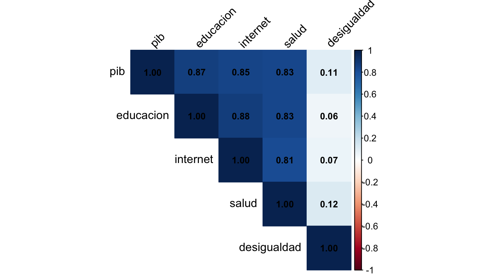
2.2 Distancias entre observaciones
La distancia euclidiana es la métrica por defecto de K-means y clustering jerárquico. También existen manhattan, maximum, canberra, binary y minkowski.
d <- dist(datos_scaled, method = "euclidean")
# Ver las primeras 5 observaciones
as.matrix(d)[1:5, 1:5] |> round(2) 1 2 3 4 5
1 0.00 1.70 0.88 1.29 2.01
2 1.70 0.00 1.28 0.80 2.22
3 0.88 1.28 0.00 0.69 1.50
4 1.29 0.80 0.69 0.00 1.88
5 2.01 2.22 1.50 1.88 0.003 K-means
3.1 Ajustar K-means
nstart = 25 ejecuta 25 inicializaciones aleatorias y devuelve la mejor. Protege contra mínimos locales. Siempre escalar las variables antes de llamar a kmeans().
km <- kmeans(datos_scaled, centers = 3, nstart = 25)
# Estructura del objeto
names(km)[1] "cluster" "centers" "totss" "withinss" "tot.withinss"
[6] "betweenss" "size" "iter" "ifault" km$cluster: vector de asignación (1, 2, 3, …)km$centers: centros de cada cluster (en escala escalada)km$totss,km$withinss,km$tot.withinss,km$betweenss: descomposición de varianza
# Asignación de cada observación
head(km$cluster, 15) [1] 1 1 1 1 1 1 1 1 1 1 1 1 1 1 1# Centros de los clusters
round(km$centers, 2) pib educacion internet salud desigualdad
1 1.07 1.11 1.10 1.02 -0.59
2 0.00 -0.12 -0.04 -0.04 1.11
3 -1.19 -1.10 -1.18 -1.08 -0.71# Tamaño de cada cluster
km$size[1] 30 33 273.2 Elegir K: método del codo
El “codo” aparece donde la suma de distancias intra-cluster (wss) deja de caer bruscamente. Se busca el punto donde añadir un cluster más ya no mejora mucho.
fviz_nbclust(datos_scaled, kmeans, method = "wss",
k.max = 8, nstart = 25) +
labs(title = "Método del codo",
subtitle = NULL,
y = "Suma de distancias intra-cluster (WSS)")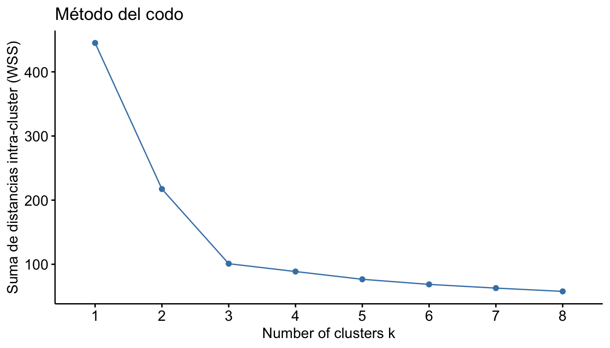
3.3 Elegir K: método de la silueta
La silueta mide qué tan bien cada punto encaja en su cluster. El K óptimo maximiza la silueta promedio.
fviz_nbclust(datos_scaled, kmeans, method = "silhouette",
k.max = 8, nstart = 25) +
labs(title = "Método de la silueta", subtitle = NULL)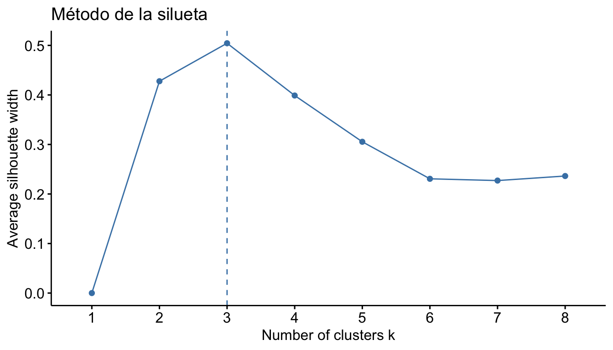
3.4 Silueta detallada por observación
Una vez elegido K, podemos inspeccionar la silueta de cada punto. Valores negativos indican puntos mal clasificados.
sil <- silhouette(km$cluster, dist(datos_scaled))
# Silueta promedio
round(mean(sil[, 3]), 3)[1] 0.504# Visualizar por observación
fviz_silhouette(sil) +
theme(axis.text.x = element_blank()) cluster size ave.sil.width
1 1 30 0.51
2 2 33 0.50
3 3 27 0.50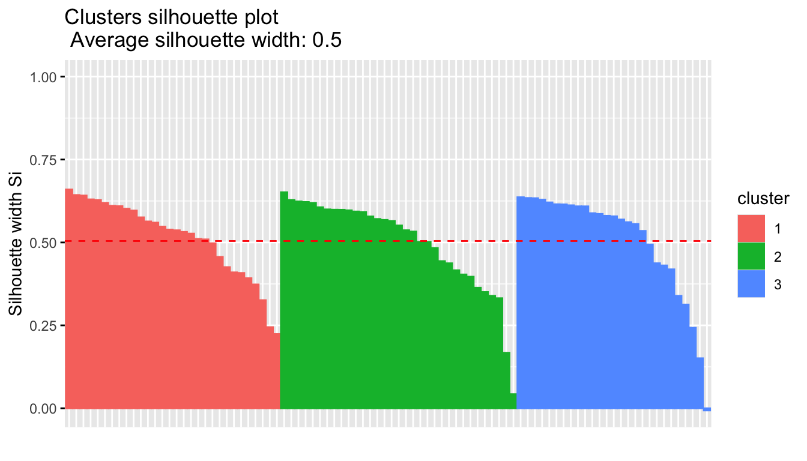
| Valor | Interpretación |
|---|---|
| 0.71 – 1.00 | Estructura fuerte |
| 0.51 – 0.70 | Estructura razonable |
| 0.26 – 0.50 | Estructura débil |
| < 0.25 | Sin estructura clara |
3.5 Visualizar los clusters con fviz_cluster()
factoextra proyecta automáticamente los datos en los dos primeros componentes principales para visualizar en 2D.
fviz_cluster(km, data = datos_scaled,
geom = "point",
ellipse.type = "convex",
palette = c("#2d4563", "#b85450", "#6b8e23"),
ggtheme = theme_minimal())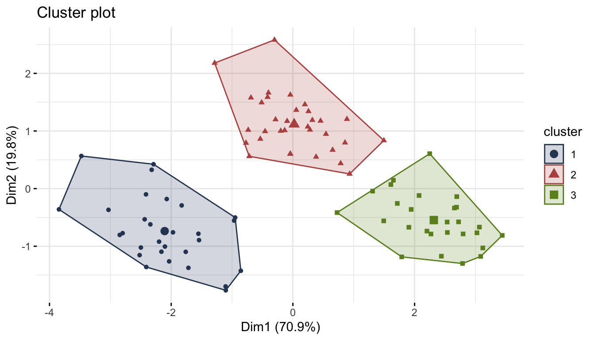
3.6 Validar contra una etiqueta conocida
Si tenemos una etiqueta sustantiva (como grupo_real), podemos cruzarla con la asignación del modelo. Los números de cluster son arbitrarios: lo que importa es si cada grupo real cae en un solo cluster.
table(real = grupo_real, cluster = km$cluster) cluster
real 1 2 3
alto 30 0 0
bajo 0 3 27
medio 0 30 03.7 Perfil de cada cluster
Para dar sentido sustantivo a los clusters, calculamos la media de cada variable dentro de cada grupo.
datos |>
mutate(cluster = km$cluster) |>
group_by(cluster) |>
summarise(across(where(is.numeric),
\(x) round(mean(x), 2)))# A tibble: 3 × 6
cluster pib educacion internet salud desigualdad
<int> <dbl> <dbl> <dbl> <dbl> <dbl>
1 1 2.38 2.81 2.54 2.09 -1.08
2 2 -0.02 -0.19 -0.1 0.25 1.91
3 3 -2.68 -2.58 -2.77 -1.56 -1.294 Clustering jerárquico
4.1 Ajustar con distintos métodos de enlace
| Método | Cómo mide la distancia entre clusters |
|---|---|
single |
Puntos más cercanos (puede crear cadenas) |
complete |
Puntos más lejanos (clusters compactos) |
average |
Promedio de todas las distancias |
ward.D2 |
Minimiza la varianza interna (muy usado) |
hc <- hclust(d, method = "ward.D2")4.2 Cortar el dendrograma
cutree() corta el dendrograma a una altura que produce K clusters.
grupos_hc <- cutree(hc, k = 3)
table(real = grupo_real, jerarquico = grupos_hc) jerarquico
real 1 2 3
alto 30 0 0
bajo 0 1 29
medio 0 29 14.3 Visualizar el dendrograma
plot(hc, hang = -1, labels = FALSE,
main = "", xlab = "", sub = "", ylab = "Altura")
rect.hclust(hc, k = 3,
border = c("#2d4563", "#b85450", "#6b8e23"))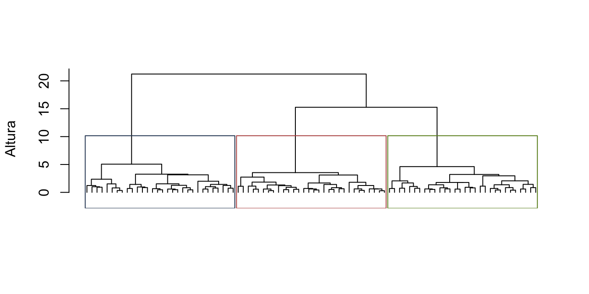
4.4 Dendrograma coloreado con dendextend
dend <- as.dendrogram(hc) |>
dendextend::color_branches(k = 3,
col = c("#2d4563", "#b85450", "#6b8e23")) |>
dendextend::set("labels_cex", 0.6)
plot(dend, main = "", ylab = "Altura")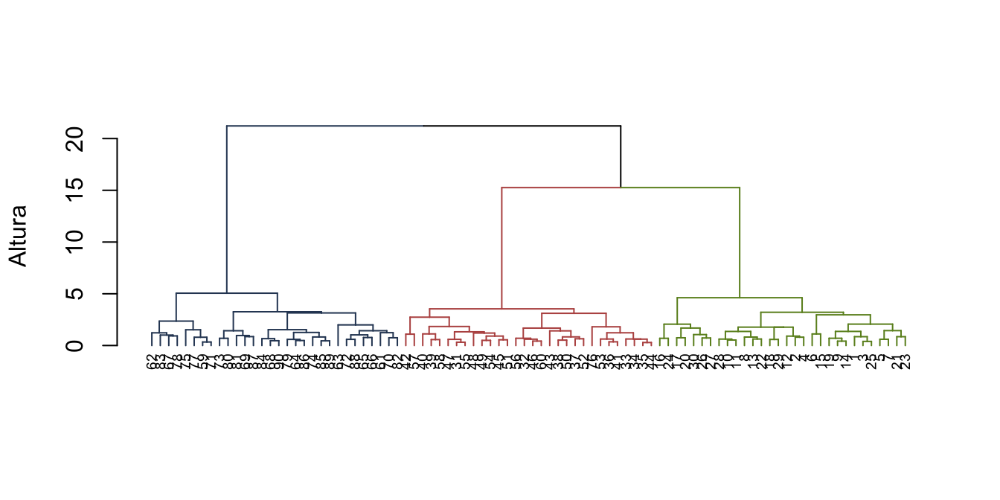
4.5 K-means vs. jerárquico
| Criterio | K-means | Jerárquico |
|---|---|---|
| Elegir K | Antes de ejecutar | Después, cortando |
| Forma de clusters | Esféricos | Cualquier forma |
| Escalabilidad | Muy rápido | Lento con n grande |
| Reproducibilidad | Depende de la semilla | Determinístico |
| Visualización | Scatter plot | Dendrograma |
5 Análisis de componentes principales (PCA)
5.1 Ajustar PCA con prcomp()
prcomp() espera datos numéricos. Como ya escalamos antes, no necesitamos scale. = TRUE. Si los datos no estuvieran escalados, sí habría que pasarlo.
pca <- prcomp(datos_scaled)
# Resumen: varianza explicada y acumulada
summary(pca)Importance of components:
PC1 PC2 PC3 PC4 PC5
Standard deviation 1.8829 0.9957 0.44434 0.38634 0.34117
Proportion of Variance 0.7091 0.1983 0.03949 0.02985 0.02328
Cumulative Proportion 0.7091 0.9074 0.94687 0.97672 1.000005.2 Elegir cuántos componentes conservar
Tres criterios comunes:
- Varianza acumulada cerca del 70-80%
- Método del codo en el scree plot
- Regla de Kaiser: conservar componentes con eigenvalue > 1
fviz_eig(pca, addlabels = TRUE,
barfill = "#2d4563", barcolor = "#2d4563") +
labs(title = NULL, y = "Varianza explicada (%)") +
theme_minimal()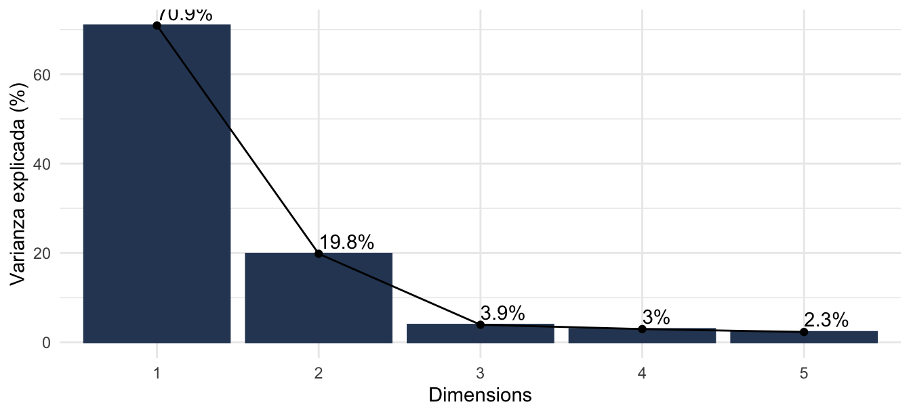
5.3 Loadings: ¿qué mide cada componente?
Los loadings (matriz de rotación) indican cuánto pesa cada variable en cada componente. Un loading grande (positivo o negativo) significa que la variable contribuye mucho al componente.
round(pca$rotation[, 1:3], 2) PC1 PC2 PC3
pib -0.50 -0.01 0.04
educacion -0.50 -0.07 0.27
internet -0.50 -0.06 0.49
salud -0.49 0.01 -0.82
desigualdad -0.07 1.00 0.06Para ordenar por valor absoluto del primer componente:
as.data.frame(pca$rotation[, 1:3]) |>
rownames_to_column("variable") |>
arrange(desc(abs(PC1))) variable PC1 PC2 PC3
1 educacion -0.50460453 -0.07166984 0.26627562
2 pib -0.50097962 -0.01370075 0.03829003
3 internet -0.49876169 -0.06143075 0.49497724
4 salud -0.49079071 0.01024873 -0.82412329
5 desigualdad -0.06895608 0.99538784 0.058732455.4 Contribución de variables
fviz_contrib() muestra qué variables contribuyen más a un componente específico. La línea roja es el umbral “esperado” bajo una contribución uniforme.
fviz_contrib(pca, choice = "var", axes = 1,
fill = "#2d4563", color = "#2d4563") +
labs(title = "Contribución de variables a PC1") +
theme_minimal()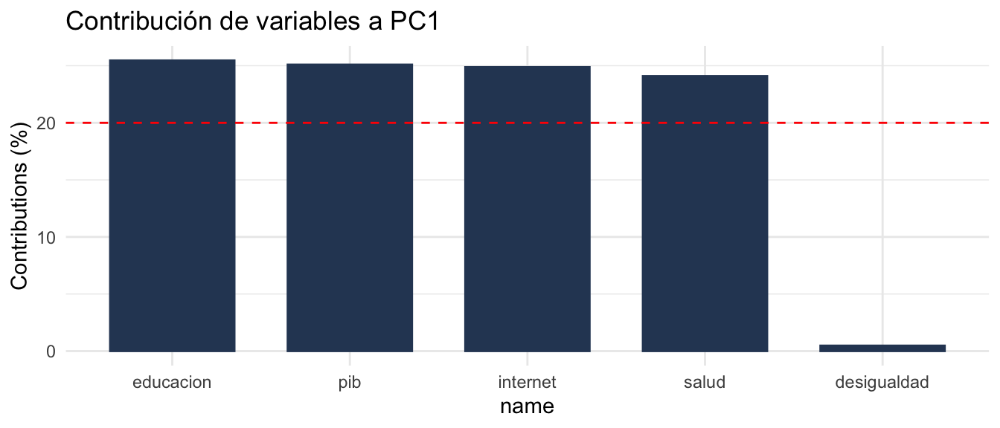
5.5 Scores: posición de cada observación
Los scores (pca$x) son las coordenadas de cada observación en el nuevo espacio de componentes. Sirven para ranking y para visualización.
pca$x[, 1:2] |>
as.data.frame() |>
mutate(PC1 = round(PC1, 2),
PC2 = round(PC2, 2),
grupo_real = grupo_real) |>
slice_head(n = 6) PC1 PC2 grupo_real
1 -1.76 -1.10 alto
2 -2.80 -0.77 alto
3 -1.97 -0.76 alto
4 -2.08 -0.72 alto
5 -2.29 0.42 alto
6 -3.48 0.57 alto5.6 Biplot: observaciones y variables juntos
Un biplot muestra las observaciones (puntos) y las variables (flechas) en el mismo plano. Flechas cercanas indican variables correlacionadas; observaciones cercanas a una flecha tienen valores altos en esa variable.
fviz_pca_biplot(pca,
geom.ind = "point",
habillage = grupo_real,
addEllipses = TRUE,
palette = c("#2d4563", "#b85450", "#6b8e23"),
col.var = "black",
repel = TRUE,
legend.title = "Grupo real") +
labs(title = NULL) +
theme_minimal()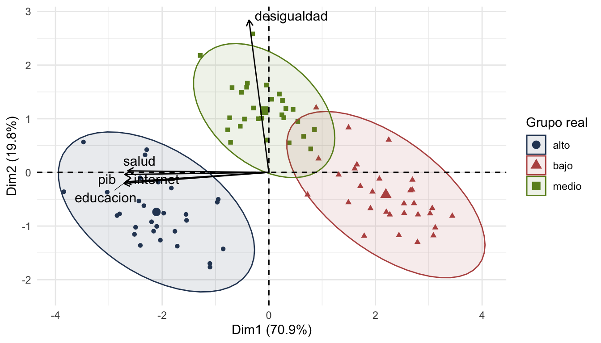
6 Combinar PCA y clustering
Una práctica común es ejecutar K-means en las variables originales y visualizar los clusters en el plano PC1-PC2.
pca_coords <- as.data.frame(pca$x[, 1:2]) |>
mutate(cluster = factor(km$cluster),
grupo_real = grupo_real)
ggplot(pca_coords, aes(x = PC1, y = PC2,
colour = cluster, shape = grupo_real)) +
geom_point(size = 3) +
scale_colour_manual(values = c("#2d4563", "#b85450", "#6b8e23")) +
labs(title = "Clusters de K-means sobre PC1-PC2",
colour = "Cluster", shape = "Grupo real") +
theme_minimal()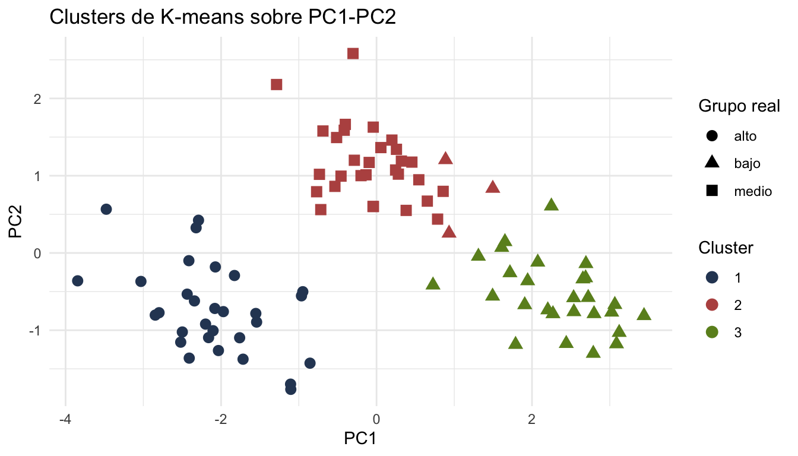
Otra opción es ejecutar K-means directamente sobre los primeros componentes (útil cuando hay muchas variables correlacionadas).
km_pca <- kmeans(pca$x[, 1:2], centers = 3, nstart = 25)
table(real = grupo_real, cluster = km_pca$cluster) cluster
real 1 2 3
alto 0 0 30
bajo 3 27 0
medio 30 0 07 Recomendaciones prácticas
- Siempre escalar antes de K-means o PCA. Las variables con mayor varianza dominan el resultado si no lo hacemos.
- Fijar la semilla con
set.seed(). K-means depende de inicialización aleatoria. - Usar
nstart = 25o más enkmeans()para evitar mínimos locales. - Combinar métricas: codo, silueta y conocimiento del dominio. Si los tres coinciden, el K elegido es defendible.
- Nombrar los clusters con etiquetas sustantivas (“alto desarrollo”) en lugar de dejar “1, 2, 3”.
- No reificar: los clusters son un resumen útil, no categorías naturales. Dependen de K, de las variables elegidas y del escalado.
- PCA sólo captura relaciones lineales. Si sospechan no linealidad, considerar UMAP o t-SNE.
8 Resumen de funciones
| Función | Paquete | Para qué sirve |
|---|---|---|
scale() |
base | Estandariza variables (media 0, sd 1) |
dist() |
base | Matriz de distancias entre observaciones |
kmeans() |
base | Ajusta K-means |
hclust() |
base | Ajusta clustering jerárquico |
cutree() |
base | Corta un dendrograma en K grupos |
rect.hclust() |
base | Dibuja rectángulos sobre el dendrograma |
prcomp() |
base | Ajusta PCA |
silhouette() |
cluster | Calcula la silueta por observación |
fviz_cluster() |
factoextra | Visualiza clusters en 2D |
fviz_nbclust() |
factoextra | Elige K con codo o silueta |
fviz_silhouette() |
factoextra | Silueta por observación |
fviz_eig() |
factoextra | Scree plot de PCA |
fviz_contrib() |
factoextra | Contribución de variables a un PC |
fviz_pca_biplot() |
factoextra | Biplot de PCA |
color_branches() |
dendextend | Colorea ramas del dendrograma |
corrplot() |
corrplot | Matriz de correlaciones visual |
Para la referencia de aprendizaje supervisado (clasificación y regresión con tidymodels), ver Referencia: tidymodels. Para análisis de texto, ver Referencia: análisis de texto.